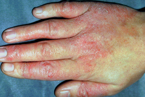
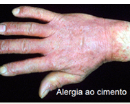
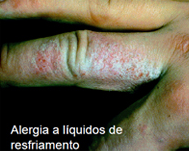
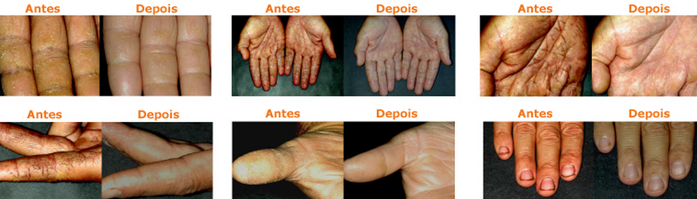

DERMATOSES
- São as doenças mais frequentes;
- Geram enormes custos sociais;
- Reduzem a qualidade de vida / motivação;
- Representam uma grande sobrecarga psicológica e social para a pessoa afetada;
- Podem levar a pessoa a abandonar o seu emprego;
- Podem ser evitadas!;
Proteger a pele é proteger as mãos
- 95% das doenças ocupacionais da pele são dermatites das mãos;
- Cerca de 65% dos acidentes que ocorrem envolvem as mãos.
Como se desenvolvem as doenças de pele


Sintomas
- Eritema;
- Incha;
- Coceira;
- Ressecamento;
- Secreção;
- Crostas;
- Descamação;
Dermatite de contato por irritantes
Causada pelo contato com substâncias agressiva ou materiais que causam danos à pele.
Substâncias prejudiciais à pele
Exemplos de irritantes à base de água:
- Ácidos e bases;
- Solventes orgânicos;
- Desinfetantes;
- Detergentes;
- Lubrificantes de resfriamento água
Exemplos de irritantes à base de óleo:
- Solventes orgânicos;
- Óeos e graxas;
- Tntas e vernizes;
- Resinas;
- Componentes sintéticos de resinas
- Substâncias à base de alcatrão
- Óleo diesel e gasolina
Tipos de alergia:


Programa de saúde da pele do trabalhador - TRATAMENTO COM PRODUTOS STOKO - 14 DIAS

STOKO® Skin Care – 70 anos de experiência na proteção da pele.
A empresa conta com uma longa tradição na produção de produtos de proteção, limpeza e cuidados da pele, resultando num know-how único na área de cuidados ocupacional da pele.
Excelente compatibilidade cutânea
A compatibilidade cutânea de cada produto foi testada sob supervisão de dermatologistas independentes, utilizando os mais modernos sistemas de testes dermatológicos.
Produção de acordo com as Boas Práticas de Fabricação
Os produtos STOKO® são produzidos com equipamentos modernos, sob padrões ideais de higiene e qualidade.
Segurança microbiológica
Os produtos STOKO® atendem aos padrões microbiológicos para produtos farmacêuticos (menos de 102 germes por grama de produto).
Validade de 60 meses
STOKO® Skin Care garante a manutenção das propriedades do produto por um período de 60 meses.
Ingredientes exclusivos da Stockhausen
STOKO® Skin Care utiliza ingredientes cosméticos de elevada pureza e potencial mínimo para irritação ou alergias (“Código de Prática”).
Ingredientes de alta qualidade:
STOKO® Skin Care detém a propriedade de diversas patentes no campo dos cuidados ocupacionais da pele:
• ASTOPON® - Agente limpador – farinha de casca de nozes.
• STOKOPON® - Sistema limpador – óleo natural e surfactantes.
• EUCORIOL® - Agente adstringente – Bisclorofenil Sulfamina Sódica.
• EUCORNOL® - Protetor cutâneo – óleo sulfatado de rícino.